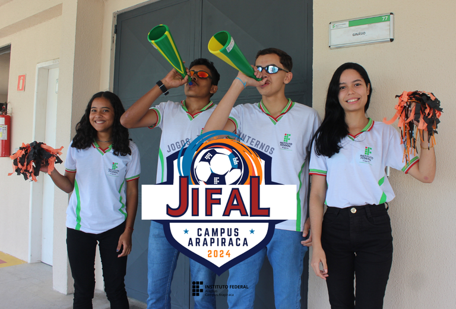
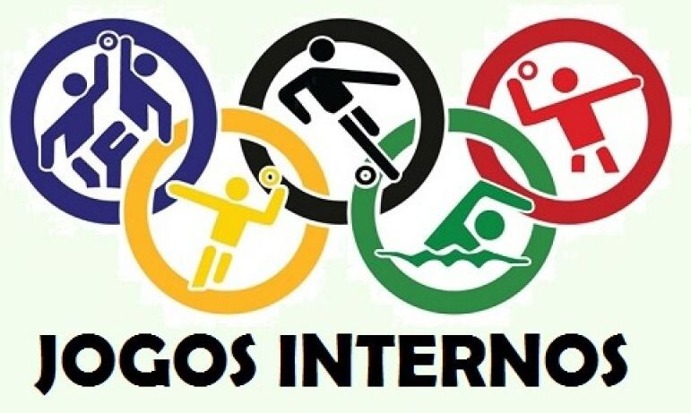

O que é o JIFAL?
Jogos internos, no caso do IFAL, são competições esportivas e recreativas realizadas internamente, com a participação dos membros do IFAL,
os discentes e os docentes, divididos em equipes. Há diversas modalidades esportivas, como futebol, futsal, voleibol, handebol, xadrez, natação,
atletismo, jogos eletrônicos, entre outros.

JIFAL 2025 - Período
O JIFAL 2025 será mais uma edição do nosso tradicional Jogos Internos Estuantis. Este ano ocorrerá de 04 de Junho de 2025
à 07 de Junho de 2025 para as tumas do técnico integrado, para as turmas do superior ainda não há datas confirmadas. Lembrando
que nesse período não há alunas e nem atividades de monitoria, para que assim todos os discentes possam prestigiar da melhor
forma possível. Venham todos prestigiar esse momento e torcer por suas turmas!

História dos Jogos Internos
Os Jogos Internos do IFAL foram criados em 2010, com o objetivo de promover a integração entre os alunos e incentivar a prática esportiva.
Desde então, os jogos têm sido realizados anualmente, com a participação de diversas turmas e modalidades esportivas.
Objetivo dos Jogos
Os Jogos Internos têm como objetivo promover a integração, o desenvolvimento de habilidades físicas, cognitivas e socioemocionais,
e o lazer entre os alunos, professores, funcionários e familiares, dentro do ambiente escolar. Além disso, eles podem ser usados
para desenvolver valores como respeito, disciplina e trabalho em equipe.
Objetivos específicos dos Jogos Internos:
- Promover a integração:
Os jogos internos são uma ótima oportunidade para os alunos de diferentes turmas e séries interagirem e se conhecerem melhor.
- Desenvolver habilidades físicas e cognitivas:
As atividades esportivas e jogos desafiam os alunos a desenvolver habilidades motoras, raciocínio, concentração e tomada de decisões.
- Promover o desenvolvimento socioemocional:
Os jogos internos ensinam os alunos a trabalhar em equipe, a lidar com a competitividade de forma saudável, a respeitar as regras e os
outros, e a lidar com a derrota e a vitória.
- Oferecer momentos de lazer e diversão:
Os jogos internos proporcionam momentos de descontração e alegria, permitindo que os alunos se divirtam e se relaxem.
- Desenvolver hábitos saudáveis:
A prática esportiva incentivada nos jogos internos pode ajudar a promover a atividade física e a adotar hábitos saudáveis.
- Desenvolver valores:
Os jogos internos podem ser usados para ensinar valores como respeito, disciplina, trabalho em equipe e honestidade.